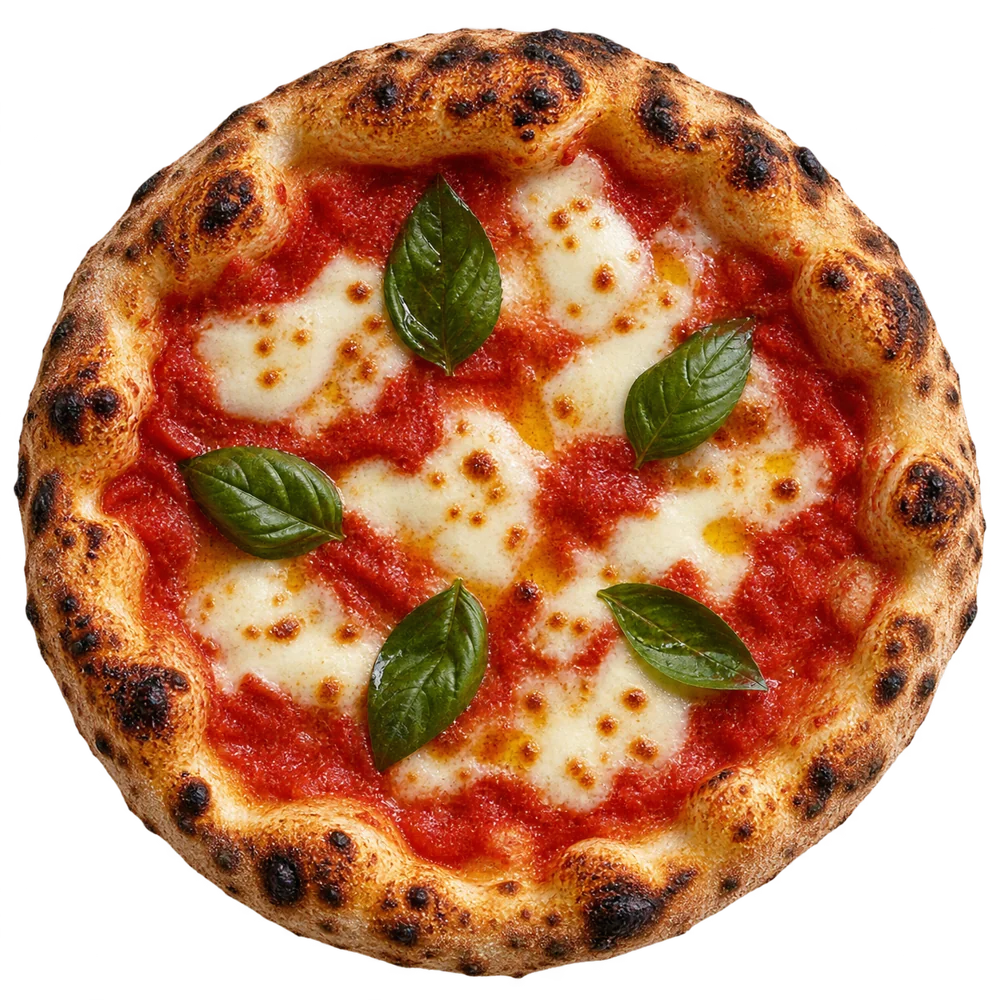

01 / L’INTRAMONTABILE8,50 €
Margherita
Pomodoro, fiordilatte di Agerola, basilico e olio extravergine. La semplicità che conquista.
01 / L’INTRAMONTABILE
Il primo amore non si scorda.
Pomodoro, fiordilatte di Agerola, basilico, olio EVO.
Sei incontri. Qual è il tuo colpo di fulmine?

Scorri o trascina
Immagini illustrative
01 / L’ANIMA PARTENOPEA
A Via Pindaro, un piccolo viaggio nei sapori di Napoli.
Dal fiordilatte di Agerola alla provola, dai friarielli ai crocchè: il menu di Lievit’Amo parla partenopeo. Ci sono i grandi classici, gli incontri più golosi e la friggitoria da mettere al centro della tavola.
Trova il tuo prossimo morso ↗02 / TRE BUONI MOTIVI
La prima scelta è difficile.
La seconda fetta, molto meno.
Pomodoro, fiordilatte di Agerola, basilico e olio extravergine. La semplicità che conquista.
Pistacchio di Bronte, mortadella Bologna IGP, ricotta e fiordilatte. Amore al primo assaggio.
Prima fritta, poi al forno a legna. Amatriciana, guanciale croccante, pecorino e grana.
Immagini illustrative. Ingredienti completi e prezzi di riferimento nel menu.
04 / LA SERATA È SERVITA
Ritiro in pizzeria o consegna a domicilio.
La tua serata, il tuo modo di ordinare.
05 / CI TROVI QUI
00125 Roma
Nella zona dell’ex Drive-In.
Orari di ritiro pubblicati su Just Eat
Gli orari di sala e consegna possono essere diversi. Chiama prima di passare.
ANCORA UN DUBBIO?
Chiama la pizzeria, oppure apri Glovo o Just Eat. La selezione che componi qui è un promemoria: puoi copiarla e usarla quando ordini. Da questa anteprima non vengono inviati ordini.
Il menu online indica i CAP 00124, 00125, 00126 e 00127. Per l’indirizzo preciso, i tempi e il costo della consegna, verifica sulla piattaforma o telefona al locale.
Sì, contatta direttamente il locale prima dell’ordine. In questa anteprima non vengono gestite varianti né richieste alimentari: ingredienti, disponibilità e possibilità di preparazione vanno confermati dalla pizzeria.
No, possono variare. Qui trovi i prezzi del menu collegato a Just Eat, consultato il 14 novembre 2026. Fa fede il prezzo confermato dal canale che scegli per ordinare.